Ярослав Селезнёв о переходе от академического реализма к абстракции, названии «Композиция №», границе между минимализмом и пустотой, ярмарках, экране и о том, что останется от картины, когда не останется художника.
Viacheslav Munister & Yaroslav Seleznev · 13 окт. 2026
«It’s nothing but everything…» — так звучит строка в Instagram Ярослава Селезнёва, и три точки в конце значат здесь не меньше слов. Это и шутка, и программа, и парадокс, который не исчерпать за один вечер. Его картины говорят так же: один широкий мазок, тонкая графическая линия, серый воздух вокруг, а потом вдруг красный, синий или оранжевый, как вспышка, которой никто не ждал.
К этому языку он шёл не по прямой. Сначала художественная школа внутри академической системы. Потом, в тридцать два года, студия мастера при Академии художеств: академический реализм XVIII–XIX веков, широкие задачи, никакой муштры. И затем сознательный отказ от узнаваемых предметов. Сам он называет это переломом: «разрушение представлений об умении рисовать и построение языка с нуля». Его персональная выставка в галерее «Арт-Лига» называлась «Композиция №», знак номера, за которым может стоять любое число. Это название доводит отказ до предела.
Сегодня его работы показывают в Париже, на выставке Deux Paris (2025) и на ярмарке Art3f (2026), а также на выставке «Сад» (2025). Рядом с холстом и бумагой появились керамика и медь: тот же широкий жест переходит на блюдо и в объект.
Мы написали Ярославу длинные и местами неудобные вопросы: об академическом глазе и названии, о цене и экране, о паразитизме и о том, что остаётся от картины без автора. Он ответил коротко и точно. В этих ответах мало слов, которые можно убрать, и совсем нет оправданий. Селезнёв говорит о красоте как об абсолюте и не прячется за иронию, хотя иронии у него хватает.
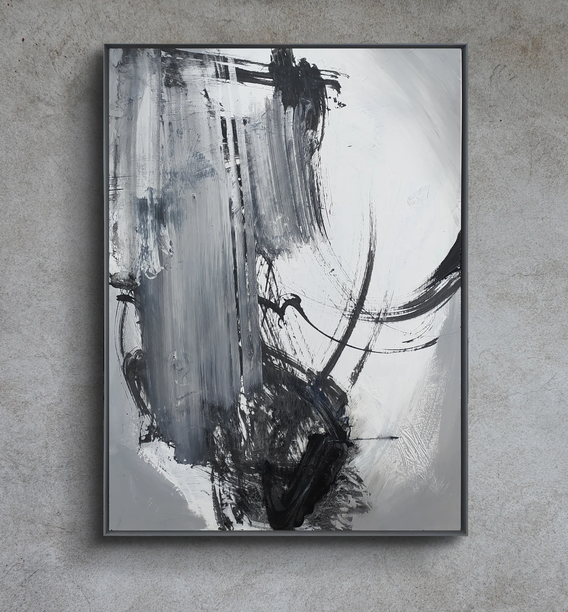
Начнём с того, что человек, выросший на академическом реализме, берёт с собой в абстракцию, с границы между «всем» и «ничем» и с названия, которое иногда мешает картине.
Viacheslav Munister [VM]: Вы учились в студии мастера из Академии художеств, где глаз воспитывают узнавать форму, вес, свет и тон. Абстракция для вас — радикализация академического зрения или его предательство? И не становится ли она просто другим, более скрытым академизмом, где узнают уже собственный «почерк»?
Yaroslav Seleznev [YS]: Хотя я окончил художественную школу, которая была частью академической системы, в студию мастера пришёл уже в осознанном возрасте, в тридцать два года. Муштры и насаждения канона не было, задачи ставились широкие. Целью был не постсезаннизм и соцарт, а академический реализм XVIII–XIX веков. Поэтому не то чтобы переход к абстракции был лёгким, но всегда сохранялась широта взглядов, возможность иметь альтернативные интересы.
В момент формирования своего языка я искал что-то радикально другое, направление, где можно создать вещи актуальные и новаторские, выразить именно своё и реализоваться. Это был слом, выход в неизвестность, на свободу, на другой уровень. Можно сказать, разрушение представлений об умении рисовать и построение языка с нуля.
В какой-то момент начинаешь видеть общее, соотношение пятен, пренебрегая предметами. Думаю, это не новый академизм, а другой взгляд. Но ценности неизменны: баланс композиции, гармония, вкус и, как итог, «странная», «новая» красота.
VM: Был ли момент, когда вы увидели, что ваша точная рука — главная помеха?
YS: Стиль — и помеха, и нет. В какой-то момент он был найден как личная художественная правда, и эта правда не изменилась. Но делать одно и то же бесконечно невозможно, чувствуешь рутинизацию, опустошённость. Поэтому непреднамеренность, ошибка, случайность — то, что обновляет и даёт исключительные ощущения. Точная рука — помеха. Чрезмерный контроль — это неживое, но полное отсутствие порядка — хаос. Поэтому важен баланс: как будто нерукотворно, но автор присутствует.
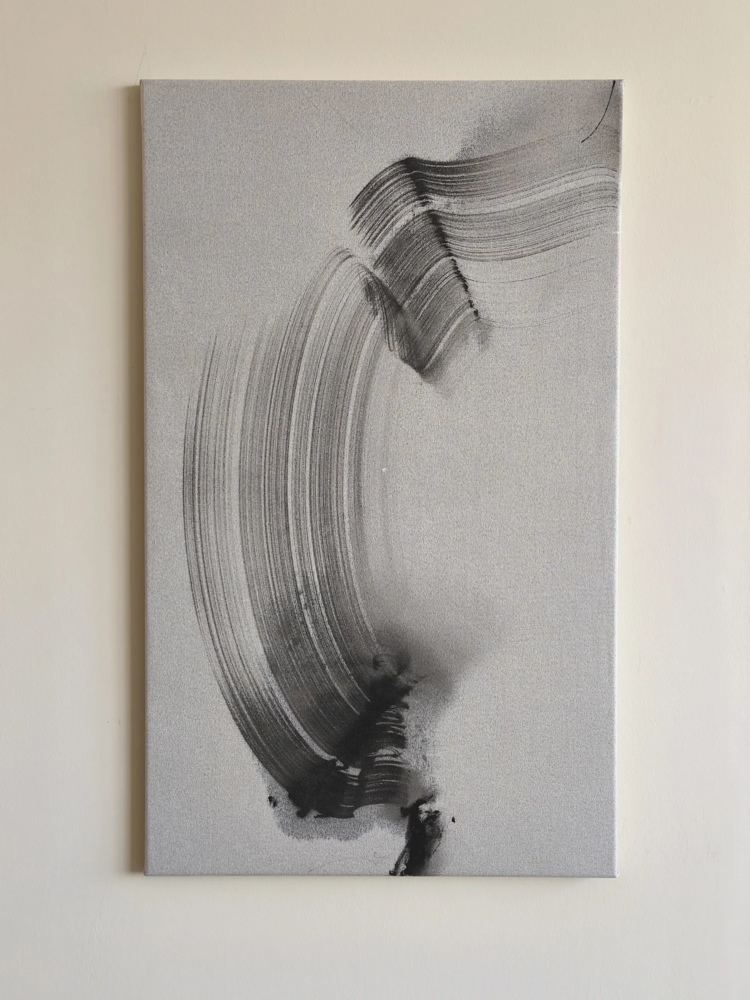
VM: «It’s nothing but everything…»: что отличает вашу картину и от пустоты, и от хаоса? Где проходит граница, не дающая «всему» растечься в «ничто»? И почему точек именно три?
YS: Вы удивительно проницательны). Это ничто, но всё. Это ничто иное, как всё, и так далее.
Для меня абстракция — это степень обобщения, дистанция от смыслов и конкретного, это уровень эмоционального и интуитивного. Формулировать идею значит быть пригвождённым ею.
Произведение — это организация пространства таким образом, что появляется сообщение о личной красоте, о художественной правде. Она основана на ощущении, ценностях и вере. Граница — субъективное мнение автора, чувство законченности, достаточности, но не чрезмерности. Мнение зрителя — полностью на его стороне. Многоточие — потому что система открытая, понятия общие, каждый увидит своё.
VM: Ваша выставка в «Арт-Лиге» называлась «Композиция №». Отказ от названия — самый честный жест или способ спрятаться от ответственности за содержание?
YS: И то и другое: и честный жест, и прятки. Название незамедлительно конкретизирует абстракцию. «Композиция №» — самое честное для произведения. И одновременно это возможность спрятать не столько неумение или отсутствие наполнения, сколько однозначность и защититься от обесценивания.
Сегодня слова часто сопряжены с маркетингом, а нет ничего более несовместимого с действительной ценностью, чем личный интерес. Он может оказаться в названиях. В то же время название — это диалог со зрителем на доступном языке. Давая номер, ты рискуешь не просто быть непонятым, а получить изначальный отказ в коммуникации.
Мне названия мешают: они вызывают слишком буквальные ассоциации или воспоминания. Если возможно остаться на уровне формы, ценность сохраняется.
Дальше — о сдержанности, руке и случайности и о том, может ли картина без сюжета быть свидетелем.
VM: О вашей практике пишут как о цветовом минимализме. Но не является ли сдержанность формой привилегии? Где граница, за которой «меньше» перестаёт быть чистотой и становится пустотой? Были ли работы, где вы позволили себе избыток?
YS: Да, были работы с детализацией, текстурами и широкой палитрой. Но возникало впечатление, что за изобилием теряется внятность, а форма переходит в декоративность. Граница находится на уровне ощущений. Пустота — это отсутствие законченной фразы, а чрезмерное самоограничение сразу оборачивается скукой, чувством потери связи со своим языком и безысходности.
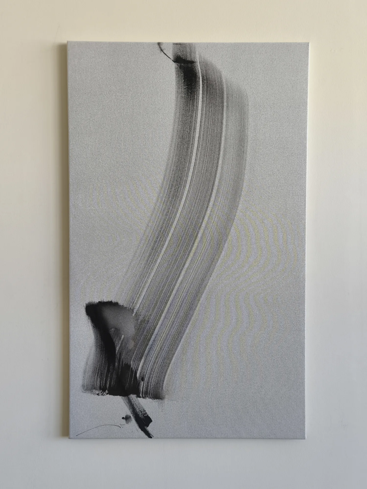
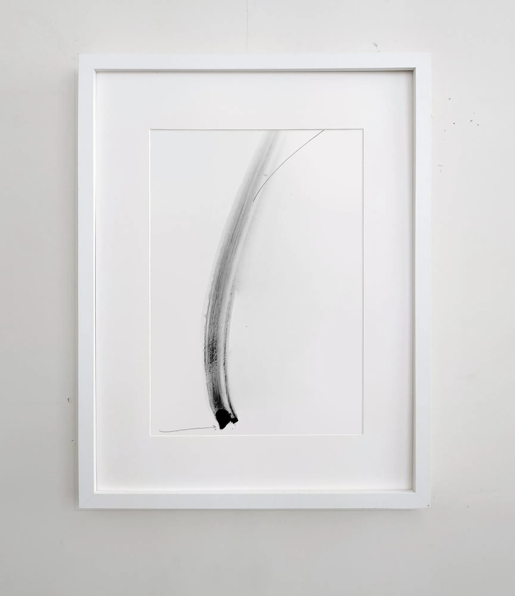
VM: Кто в картине автор: вы, материал, случай или зритель? Можно ли изображать случайность? Как вы отличаете в собственной руке живое движение от отработанного?
YS: Случайность и рука сосуществуют. Работа одновременно создана природой, но в ней присутствует автор. Художник организует случайности. Зритель включается, когда работа уже завершена.
Изобразить случайность для зрителя можно, но автор знает, что это неслучайность, и тогда для него теряются интерес и ценность. С жестом бывает момент исчерпанности; в таком случае помогает элемент новизны: другой инструмент, материал, краска, изменение движения.
На мой взгляд, вопрос не в самом изображении, а в цели, в личностном вложении. Натюрморт может быть ученическим, из-под палки, а может нести в себе ценности автора, жизнь: динамику, твёрдость руки, вкус, чувство цвета. Да, в абстракции нет критерия, это даёт свободу, но и вседоступность, и неопределимость ценности. Теста или специального человека нет; есть необходимая доля неожиданности, случайность и отсутствие натруженности, задуманности.
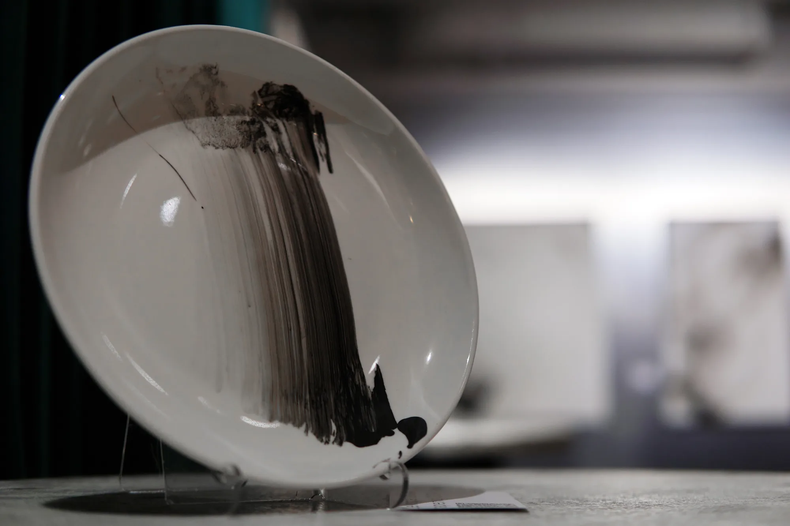
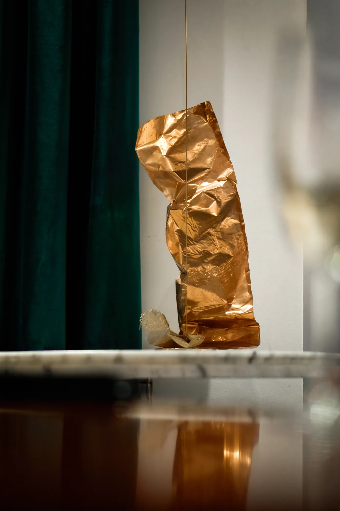
VM: Может ли картина без сюжета быть свидетелем? Если ваша работа не зависит от того, что происходит в мире, не значит ли это, что она за него не отвечает?
YS: Именно! Не обвинить, не оправдать, не обесценить. Дистанция от повесток. Попытка найти универсальные ценности, которые останутся неизменными в любых перипетиях. Автор неизбежно находится в диалоге с реальностью, прошлым, историей искусства. Это вопрос точки зрения; есть мнение, что чем жёстче время, тем абстрактнее искусство.
С другой стороны, я отчётливо понимаю, что в поисках языка отталкивался от конкретных желаний и установок. Большое искусство вне политики, на расстоянии от повесток; искусство, не про «понравиться»; вне сюжетов и смыслов, которые локализуют и обнаруживают личные пределы. Это было и оппозицией изобилию, перепроизводству образов и информации.
Потом — о наследстве авангарда, о сообществах, которые художник выбирает или отвергает, и о стене, на которой картина становится частью чужой композиции.
VM: Малевич, Родченко и Кандинский верили, что форма меняет жизнь. Во что верите вы? И что для вас значит членство в профессиональных объединениях?
YS: Верю в красоту как таковую, как инстанцию-абсолют, свидетельством взаимодействия с которой является конкретная работа (или не является). Объединения, в том числе Союз абстракционистов России и Союз художников России, — это попытка найти круг единомышленников и своё место в профессиональном сообществе, в институциональной среде. Вступать было не нужно; или нужно — для самоопределения от обратного.
На мой взгляд, абстракция даёт свободу для поиска своего языка; это единственное направление сегодня, связанное с традицией, но дающее поле для новаторства. Абстракция — разная. Американский минимализм прошлого века не такой, как современный. Послевоенный абстрактный экспрессионизм в США отличается от японского, и так далее. Личный авторский язык — это возможность выразить себя и самореализоваться. Индивидуальность невоспроизводима и не повторяется в истории.
VM: В вашем Instagram есть подборки «Parazit» и «Borey». Кого или что вы «кормите» и чем питаетесь сами? Может ли художник быть свободным, завися от того, кто покупает и выставляет?
YS: Всё более прозаично. «Паразит» — это сообщество, наследующее ленинградский нонконформизм и arte povera, антитеза союзу художников. Можно сказать, что произведения участников находятся по ту сторону красоты, или это другая красота, с элементами маргинальности и андеграунда. Художник должен быть один, так как сообщество нивелирует индивидуальность. И меня не привлекает юмор в искусстве: попытки рассмешить или обесценить иногда выглядят ширмой и тщетным поиском неуязвимости.
Возможно, паразит меняет поведение хозяина, но главное в паразитировании в искусстве, на мой взгляд, это оппонирование официальному, конвенциональному, коммерчески успешному. А в отсутствие хозяина остаются только маргинальность и голый бунт. Я за содержательность помимо этого. Художник утверждает собственные ценности. Думаю, имеет значение поддержание автономности, изолированности собственной кухни от рынка.
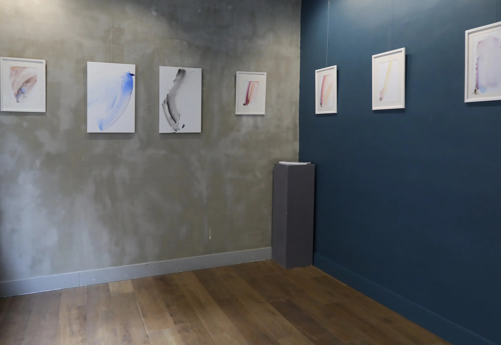
VM: Для какого времени вы работаете: для секунд, которые есть, или для лет, которых никто не даст? И насколько вы готовы отдавать авторство над картиной выставке, куратору, стене?
YS: Думаю, абстракция принимается зрителем, который хочет или готов её принимать. Время не имеет значения. Это может быть долго, если есть потенциал для погружения, или секунды. Мы бессознательно воспринимаем другого за мгновение и фактически решаем, нравится или не нравится, выбираем, общаться или нет.
В «Арт-Лиге» мы размещали работы совместно, согласованно. Для меня важна чистота пространства, его способность быть фоном. Кураторам на откуп отдавать не готов, и чужой взгляд, как правило, чужд. На выставке работа раскрывается шире, цикл подходит к завершению, взгляд встречается со взглядом.
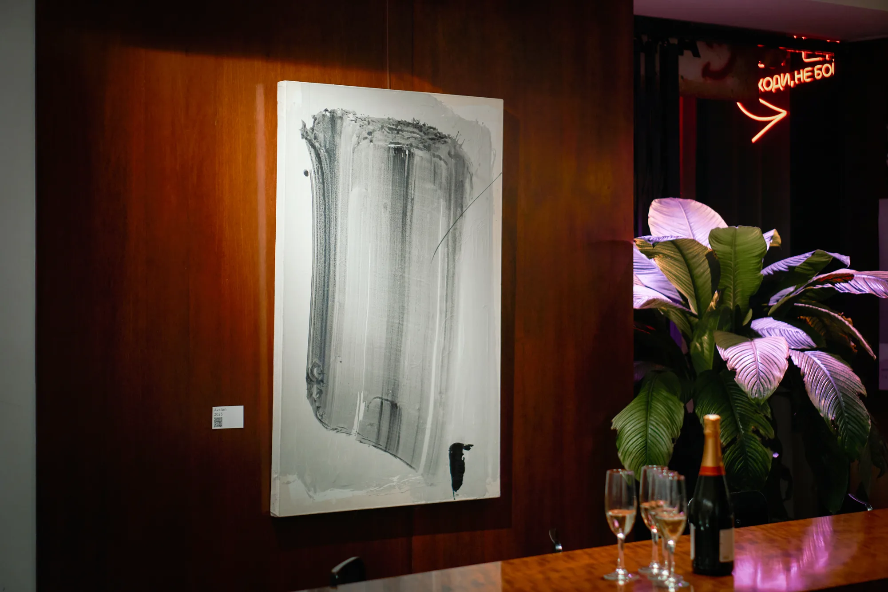
Четвёртая часть — про ярмарку, цену и экран телефона и про то, как заметить, что стиль умер, раньше, чем об этом скажет рынок.
VM: Абстрактная картина — почти идеальный товар. Как не стать декоративным? Меняет ли вас присутствие рынка, когда вы выставляетесь на ярмарках вроде Art3f Paris?
YS: Ярмарки — это всегда воодушевляющее живое общение, большое количество новых зрителей, внимания, ещё одна возможность произвести первое впечатление.
Мне кажется, есть достаточно понятная граница декоративности. Это про желание понравиться. Оно выражается в сделанности, лоске, изобильности, нарочитой дружелюбности. Если сохранять собственную цель и оставаться в рамках вкуса, это позволяет избежать декора.
Рынок меняет. На протяжении нескольких лет я слышу, что нужен цвет, что монохром скучен, уныл, траурен, угрюм. Поэтому в цвет выхожу аккуратно. Но, честно, как говорил Тарковский, цвет мешает сфокусированности сообщения.
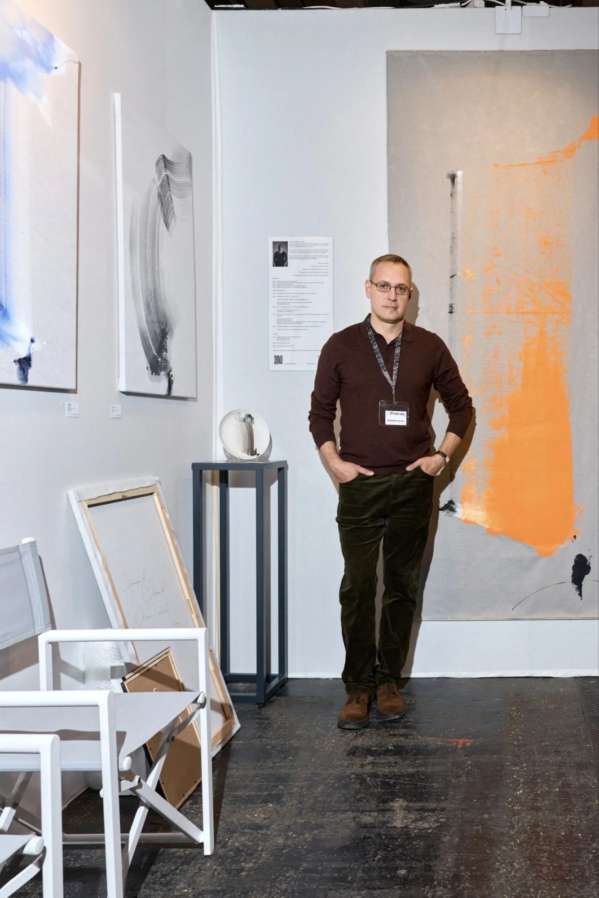
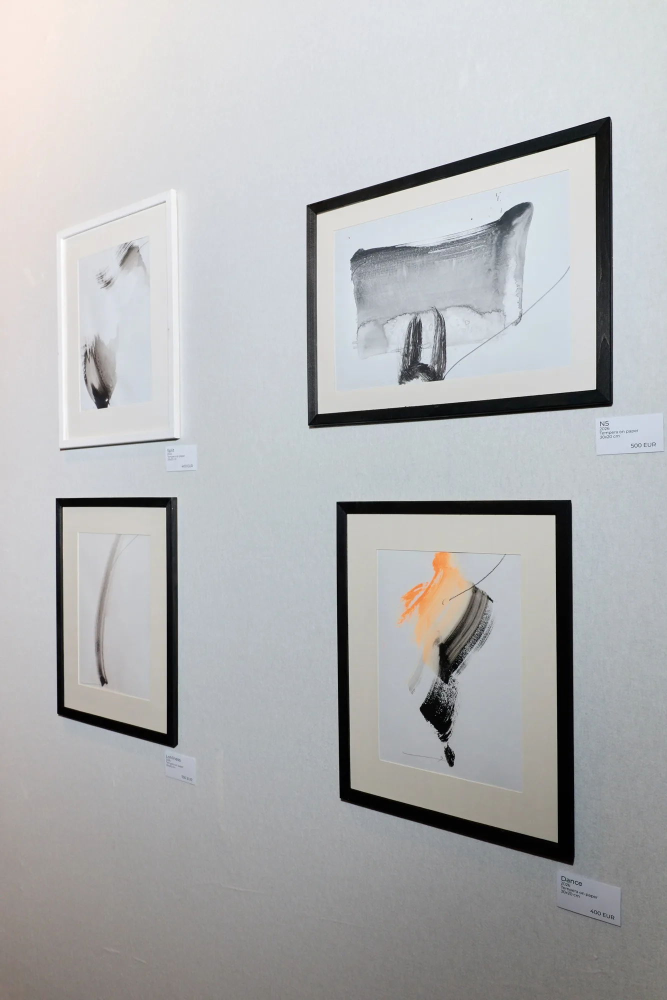
VM: Ваши работы видят в ленте тысячи людей, оригинал — десятки. Какая из этих встреч — «работа»? Менялась ли картина, когда вы думали о том, как она будет выглядеть на экране?
YS: Работая в мастерской, я действую так, как считаю необходимым вживую, на медийное пространство не оглядываюсь. Некоторые работы смотрятся на экране менее выразительно; стараюсь публиковать те, которые впечатляют. Думаю, меняется контекст и мерность восприятия, сама работа неизменна. Соцсети воспринимаю как необходимость для целей самопрезентации. Но обязанность постпродакшна и публикации — это работа, не удовольствие.
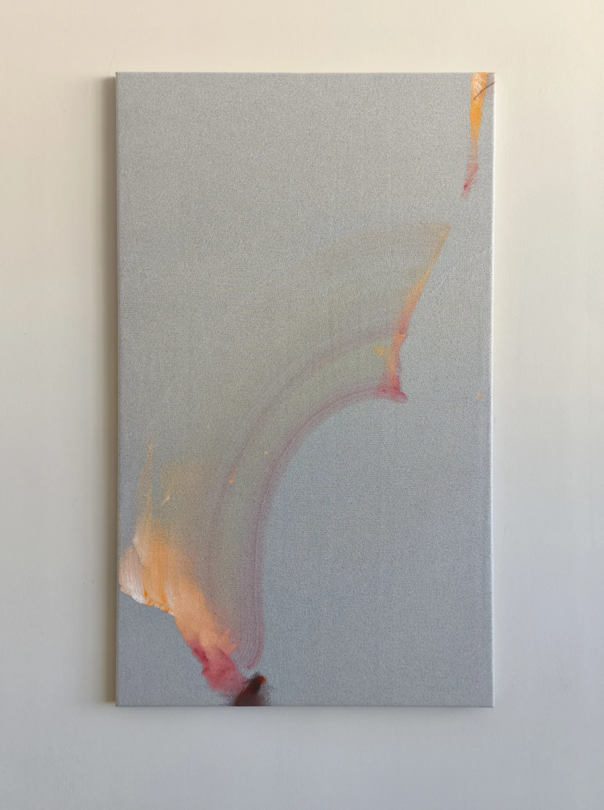
VM: Каков признак мёртвого стиля — и как вы поймёте, что ваш уже умер? Что заставило бы вас остановиться?
YS: Живое в стиле — это (n+1)׿, где последнее — случайность, непреднамеренность, непредсказуемость. Стиль мёртв, когда мёртв автор и не может живо, в формате общения, поделиться собственными целями и ценностями. Однако искусствоведы, исследователи и дилеры успешно бальзамируют произведения и обеспечивают их циркуляцию веками.
Я делал и авторские повторы работ, и близкое к ожиданиям, но это было в формате заказа, я воспринимал это как коммерческое. В мастерской ориентируюсь только на свои предпочтения. Брак есть, но он скорее связан с хождением по краю эстетичного. Есть мнение, что фрустрация — путь субъективации. Наверное, в длинной перспективе это так, но каждый провал может быть последним.
Не могу представить ситуацию, когда дальше уже нельзя. Из принципа — да, когда видишь, что приём заюзали и превратили в китч (не как художественный приём). Вероятно, может остановить изобилие, когда незачем работать: это точно может изменить внутреннюю интенцию. Но предполагаю, что продолжу работать для себя, в стол.
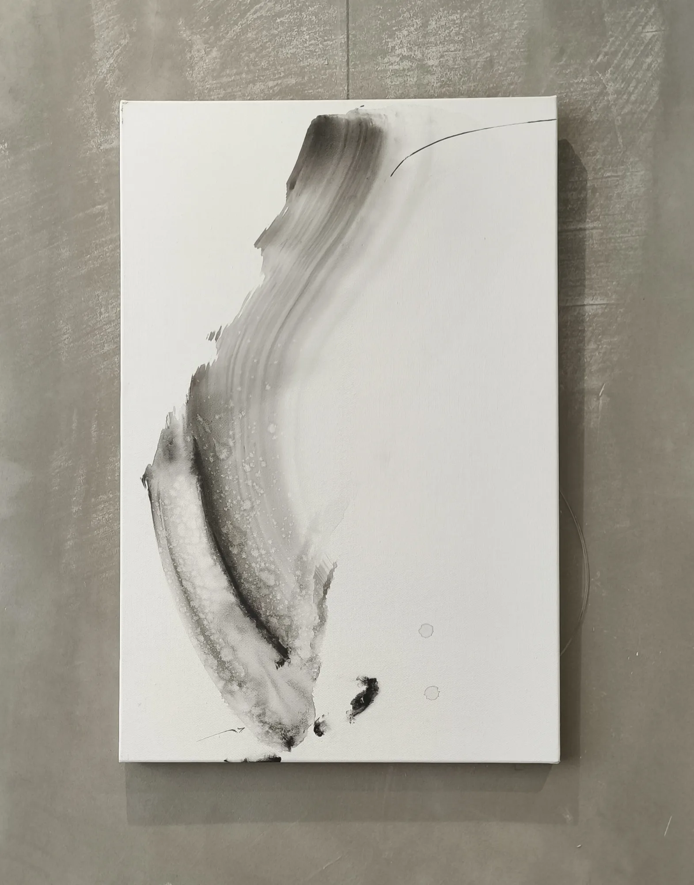
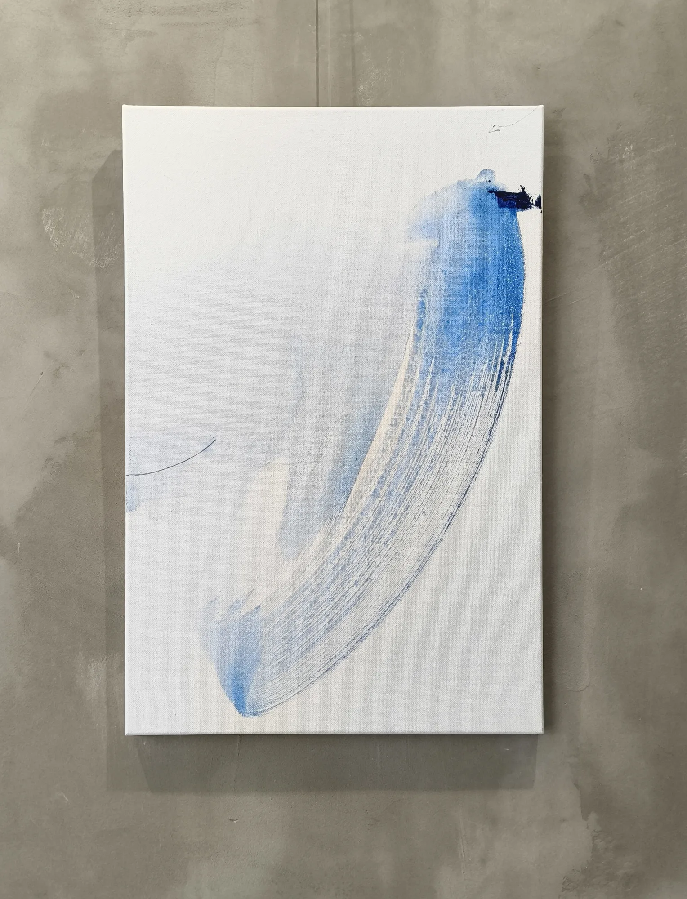
И напоследок — о словах, которые лучше не говорить, и о том, что остаётся, когда автора уже нет.
VM: Об абстракции пишут либо пусто, либо слишком поясняюще. Какое одно слово или фразу вы позволили бы нам поставить рядом с вашей картиной?
YS: Действительно, лучше бы без слов. Но «Nothing but everything» подойдёт). Критик и зритель существуют в другой плоскости. Для меня абстракция — это непосредственное восприятие и степень обобщения. Интерпретации и ассоциации — необходимые элементы коммуникации, существования арт-мира. Мне кажется, любую работу можно истолковать, и не единственным образом. Это инструмент культурного маркетинга.
VM: Что от вашей работы останется, когда не останется вас, ваших объяснений и имени? Если бы вы могли оставить только одну работу — какой бы она была? И какой вопрос без ответа вы оставили бы читателям?
YS: Останутся композиция, мастерство и вкус, недосказанность и внутренняя динамика. Если это захотят увидеть. Истории и легенды более увлекательны).
Я бы оставил Ugly beauty, 2023 года. «Ужасно прекрасное» или «уродливая красота»). Это работа, в которой я сформулировал цель: самыми простыми средствами — о максимуме.
А вопрос такой: есть ли место слову «красота» в искусстве сегодня, или оно вытеснено понятием «художественная правда»? Может ли существовать красота как таковая, как инстанция, идеал?
Художник организует случайности.
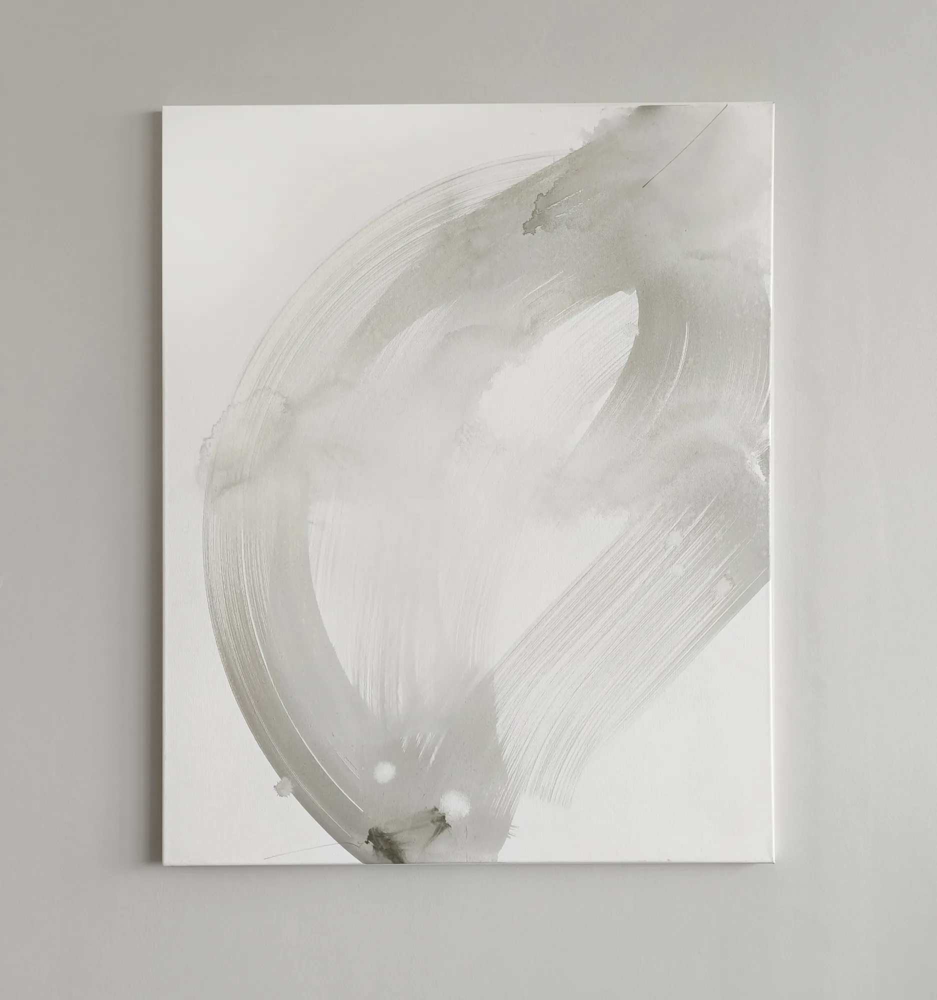
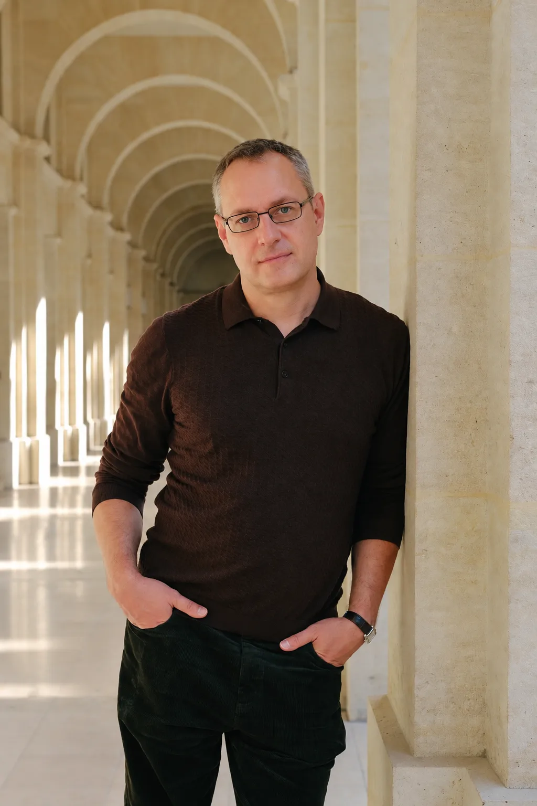
Последний вопрос Ярослав вернул нам: может ли красота существовать в искусстве сегодня, или её заменила «художественная правда»? Отвечать за него мы не будем. Пусть вопрос останется с читателями.
Интервью: Viacheslav Munister. Ответы: Ярослав Селезнёв, с небольшой редактурой для ясности и пунктуации. Вопросы сокращены. Все работы и фотографии публикуются по инициативе художника.
Painter Yaroslav Seleznev on moving from academic realism to abstraction, why a title can get in the way, where minimalism turns into emptiness, and what is left of a painting when the artist is gone.
Viacheslav Munister & Yaroslav Seleznev · Oct 13, 2026
“It’s nothing but everything…” That is the line in Yaroslav Seleznev’s Instagram, and the three dots at the end say as much as the words. It is a joke, a programme and a paradox you cannot finish in one evening. His paintings speak the same way: one broad stroke, a thin graphic line, grey air around them, and then suddenly red, blue or orange, like a flash no one expected.
He did not come to this language in a straight line. First an art school inside the academic system. Then, at thirty-two, a master’s studio linked to the Academy of Arts: academic realism of the eighteenth and nineteenth centuries, broad tasks, no drilling. And then a deliberate break with recognisable subjects. He calls it “the destruction of my idea of being able to draw, and the building of a language from zero.” His solo exhibition at the Art-Liga gallery was called Composition No., a number sign that any number could follow. The title pushes that refusal as far as it will go.
Today his work is shown in Paris, at Deux Paris (2025) and at the Art3f fair (2026), and at the exhibition Garden (2025). Beside canvas and paper there are now ceramics and copper: the same broad gesture moves onto a dish and into an object.
We wrote Yaroslav long and sometimes uncomfortable questions: about the academic eye and the title, about price and the screen, about parasitism, and about what is left of a painting without its author. He answered briefly and exactly. Few words here could be cut, and none are excuses. Seleznev speaks of beauty as an absolute and does not hide behind irony, though he has plenty of it.
We begin with what a person trained in academic realism carries into abstraction, with the line between “everything” and “nothing”, and with a title that sometimes gets in the painting’s way.
Viacheslav Munister [VM]: You studied in a master’s studio linked to the Academy of Arts, where the eye learns to see form, weight, light and tone. Is abstraction for you a radical version of that training, or a betrayal of it? Could it be just a better hidden academism, where what you recognise is your own “handwriting”?
Yaroslav Seleznev [YS]: I finished an art school that was part of the academic system, but I came to the master’s studio late, at thirty-two, and by choice. There was no drilling and no canon forced on us. The tasks were broad. We were aiming not at post-Cézannism or Soviet social realism, but at the academic realism of the eighteenth and nineteenth centuries. So the move to abstraction was not easy, but I always had room for other interests.
When I was building my own language, I wanted something radically different. I wanted to make work that was new and of its time, to say what was truly mine, and to find myself in it. It was a break, a step into the unknown, into freedom, onto another level. You could say I destroyed my idea of being able to draw and built a language from zero.
At some point you start to see the whole, the relation of the patches, and you stop caring about objects. I don’t think this is a new academism. It is a different way of looking. The values stay the same: balance in the composition, harmony, taste, and, as a result, a “strange”, “new” beauty.
VM: Was there a moment when you saw that your precise hand was the main obstacle?
YS: Style is both an obstacle and not. At some point I found mine, as a personal artistic truth, and that truth has not changed. But you can’t do the same thing for ever. You feel routine and a kind of emptiness. That is why the unintended, the mistake, chance, renew it and give me exceptional sensations. A precise hand is an obstacle. Too much control is lifeless, but no order at all is chaos. So balance matters: it should look as if it was not made by hand, yet the author is there.
VM: “It’s nothing but everything…” What separates your painting from emptiness and from chaos? What keeps “everything” from dissolving into “nothing”? And why exactly three dots?
YS: You are remarkably perceptive). It is nothing, but it is everything. It is nothing other than everything, and so on.
For me abstraction is a degree of generalisation, a distance from meanings and from the concrete. It works on the level of emotion and intuition. To formulate an idea is to be pinned down by it.
A work organises space so that a message appears about personal beauty, about artistic truth. That truth rests on feeling, values and faith. The boundary is the author’s own sense that the work is finished and enough, but not too much. The viewer’s opinion belongs entirely to the viewer. The ellipsis is there because the system is open, the concepts are general, and everyone will see their own.
VM: Your exhibition at Art-Liga was called Composition No. Is refusing a title the most honest gesture, or a way of hiding from responsibility for the content?
YS: Both: an honest gesture and a game of hide-and-seek. A title immediately makes an abstraction concrete. “Composition No.” is the most honest name for such a work. But it also lets you hide, not so much a lack of skill or substance as any single meaning, and it protects you from being devalued.
Today words are often tied to marketing, and nothing is less compatible with real value than personal interest. It can creep into titles. At the same time a title is a conversation with the viewer in a language they understand. If you give only a number, you risk more than being misunderstood: you may be refused communication from the start.
Titles get in my way. They call up associations or memories that are too literal. If I can stay at the level of form, the value is kept.
Next: restraint, the hand and chance, and whether a painting without a subject can be a witness.
VM: Your work is often called colour minimalism. But isn’t restraint a kind of privilege? Where does “less” stop being purity and become emptiness? Were there works where you allowed yourself excess?
YS: Yes, I made works with detail, texture and a wide palette. But I felt that clarity gets lost in abundance, and the form slides into decoration. The boundary is a matter of feeling. Emptiness is a phrase left unfinished. Too much self-limitation quickly turns into boredom, a feeling of losing touch with my own language, and hopelessness.
VM: Who is the author of a painting: you, the material, chance, or the viewer? Can chance be depicted? How do you tell a living movement of your hand from a rehearsed one?
YS: Chance and the hand live together. The work is made by nature, yet the author is present in it. The artist organises chance. The viewer joins in when the work is already finished.
You can depict chance for a viewer, but the author knows it is not chance, and then the interest and value are gone for him. A gesture can wear out. Then something new helps: another tool, a different material or paint, a change of movement.
In my view the question is not the image itself but the purpose and the personal investment. A still life can be a student exercise, done under pressure, or it can carry the author’s values and life: energy, a firm hand, taste, a feeling for colour. Yes, abstraction has no criterion. That gives freedom, but it also means that anyone can make abstraction, and value becomes hard to define. There is no test and no special person to ask. What is needed is some surprise, some chance, and no sign of labour or contrivance.
VM: Can a painting without a subject be a witness? If your work does not depend on what happens in the world, does it bear no responsibility for it?
YS: Exactly! Not to accuse, not to justify, not to devalue. A distance from agendas. An attempt to find universal values that stay the same through any upheaval. The author is always in dialogue with reality, with the past, with art history. It depends on your point of view. Some say that the harsher the times, the more abstract the art.
On the other hand, I know that when I was looking for my language, I started from specific wishes and positions. Great art stands outside politics, at a distance from agendas. It is not about being liked. It stays outside the subjects and meanings that pin you down and show your personal limits. It was also a reaction against abundance, against the overproduction of images and information.
Then the legacy of the avant-garde, the communities an artist chooses or refuses, and the wall where a painting becomes part of someone else’s composition.
VM: Malevich, Rodchenko and Kandinsky believed that form can change life. What do you believe in? And what do professional associations mean to you?
YS: I believe in beauty as such, as an absolute, and a particular work is evidence of contact with it, or is not. The associations, including the Union of Abstractionists of Russia and the Union of Artists of Russia, were an attempt to find like-minded people and my place in the professional community. I did not have to join. Or I did, in order to define myself by contrast.
In my view abstraction gives freedom to look for your own language. It is the only direction today that is tied to tradition and still leaves room for something new. Abstraction is not one thing. American minimalism of the last century is not the same as the contemporary kind. Post-war abstract expressionism in the US differs from the Japanese, and so on. A personal language lets you express yourself and realise yourself. Individuality cannot be reproduced and does not repeat in history.
VM: Your Instagram has collections called “Parazit” and “Borey”. Whom or what do you “feed”, and what do you feed on? Can an artist be free while depending on those who buy and exhibit?
YS: It is more down to earth. “Parazit” is a community that inherits Leningrad nonconformism and arte povera. It is the opposite of an artists’ union. You could say its members’ works lie on the far side of beauty, or that it is a different beauty, with something marginal and underground in it. An artist should be alone, because a community levels individuality. Humour in art doesn’t attract me. Attempts to make people laugh or to devalue things sometimes look like a screen and a hopeless search for invulnerability.
Perhaps a parasite changes its host’s behaviour. But in art, parasitism mainly means opposing the official, the conventional, the commercially successful. Without a host, only marginality and plain rebellion are left. I want substance beyond that. An artist asserts his own values. I think it is important to stay autonomous and keep your own kitchen separate from the market.
VM: Who do you work for: the seconds viewers actually give, or the years nobody will give? And how far will you let an exhibition, a curator or a wall take authorship of your painting?
YS: I think abstraction is accepted by a viewer who wants or is ready to accept it. Time doesn’t matter. It can be long, if there is something to sink into, or it can be seconds. We read another person unconsciously in an instant, and in effect decide whether we like them and whether to talk.
At Art-Liga we hung the works together, by agreement. A clean space matters to me, its ability to be a background. I am not ready to leave this to curators, and another person’s eye is usually foreign. At an exhibition a work opens up more fully, a cycle comes to an end, and one gaze meets another.
The fourth part is about the fair, the price and the phone screen, and about noticing that a style has died before the market says so.
VM: An abstract painting is almost the perfect commodity. How do you avoid becoming decorative? Does the market change you, when you show at fairs such as Art3f Paris?
YS: Fairs are always inspiring: lively contact, many new viewers, attention, one more chance to make a first impression.
I think the line of the decorative is fairly clear. It is about wanting to please. It shows in polish, gloss, abundance, ostentatious friendliness. If you keep your own purpose and stay within the limits of taste, you can avoid decor.
The market does change me. For several years I have heard that colour is needed, that monochrome is boring, dreary, funereal, gloomy. So I move into colour carefully. But honestly, as Tarkovsky said, colour gets in the way of a focused message.
VM: Thousands of people see your painting in a feed, and only dozens see the original. Which of these meetings is “the work”? Did a painting change when you thought about how it would look on screen?
YS: In the studio I do what I think is right for the work in person. I don’t look over my shoulder at the media space. Some works look less expressive on screen, so I try to publish the ones that make an impression. I think the context and the dimension of perception change, but the work itself does not. I see social media as a necessity for self-presentation. But post-production and publishing are a duty. They are work, not pleasure.
VM: What is the sign of a dead style, and how will you know that yours has died? What would make you stop?
YS: What is alive in a style is (n+1)׿, where the last term is chance, the unintended, the unpredictable. A style is dead when the author is dead and can no longer share his aims and values in living conversation. Yet art historians, researchers and dealers embalm works very successfully and keep them in circulation for centuries.
I have also repeated my own works, and made work close to what was expected, but that was on commission and I saw it as commercial. In the studio I follow only my own preferences. There are failures, but they mostly come from walking along the edge of the aesthetic. Some say frustration is the road to subjectivity. In the long run that is probably true, but any failure may be the last.
I can’t imagine a situation where it is no longer possible to go on. On principle, yes: if I saw that a technique had been overused and turned into kitsch, not as an artistic method. Abundance, when there is no reason to work, could probably stop me. It could certainly change my inner intention. But I assume I will keep working for myself, for the drawer.
And at the end, words that are better left unsaid, and what remains when the author is gone.
VM: Abstraction is usually written about either emptily or with too much explanation. What single word or phrase would you let us place next to your painting?
YS: Honestly, it would be better without words. But “Nothing but everything” will do). The critic and the viewer exist on another plane. For me abstraction is direct perception and a degree of generalisation. Interpretations and associations are necessary for communication and for the art world to exist. I think any work can be interpreted, and not in only one way. It is a tool of cultural marketing.
VM: What will remain of your work when you, your explanations and your name are gone? If you could keep only one work, which one? And what unanswered question would you leave to our readers?
YS: What will remain is the composition, craft and taste, what is left unsaid, and the inner energy. If anyone wants to see it. Stories and legends are more entertaining).
I would keep Ugly beauty, from 2023. “Terribly beautiful”, or “ugly beauty”). In that work I stated my aim: to speak about the maximum with the simplest means.
And here is my question. Is there still a place for the word “beauty” in art today, or has “artistic truth” replaced it? Can beauty exist as such, as an ideal?
The artist organises chance.
Yaroslav handed the last question back to us: can beauty still exist in art today, or has “artistic truth” replaced it? We will not answer for him. We leave it with our readers.
Interview by Viacheslav Munister. Answers by Yaroslav Seleznev, lightly edited for clarity and punctuation. Questions have been shortened. All artworks and photographs courtesy of the artist.